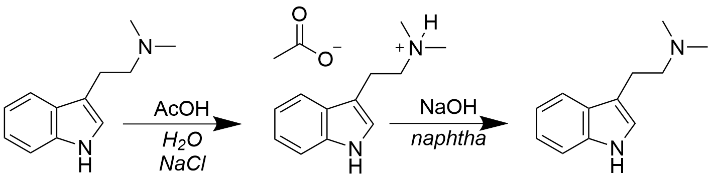

N,N-dimethyltryptamine (DMT) is a powerful short lasting psychedelic that is produced by a number of plants and animals, including in trace amounts by the human brain. it is known for its ability to produce visionary states and complete hallucinations.
DMT is not normally orally active due to its rapid metabolism by monoamine oxidase enzyme, but can be smoked or vaporised to produce an intense 5-20 minute psychedelic experience, or taken orally with a monoamine oxidase inhibitor (MAOI) to produce a longer lasting experience.
DMT is a tryptamine derivitate that is structurally related to the neurotransmitter serotonin as well as other psychedelic drugs such as psilocybin, psilocin, and bufotenin. it is thought to produce its effects by binding to the 5HT2A serotonin receptor, also thought to be responsible for the effects of other psychedelics.
preparation
the following procedure is a simple acid-base extraction of DMT from plant material using commonly available chemicals. the extraction works by first forming the DMT acetate salt by adding acetic acid, which will be extracted from the bark and dissolved in the aqueous solution. the salt is then converted back into freebase DMT by adding sodium hydroxide. this freebase form of the compound is soluble in non-polar solvent such as naphtha, which will separate from the aqueous solution. This is refrigerated to allow the crystallisation of the freebase DMT product.
add 100g of DMT containing root bark powder and 400mL of deionised water to a 2L glass jar and replace the lid. allow it to heat in a warm water bath (~50°C) and add 60mL of 4% white vinegar. continue heating the jar for one hour, agitating the contents by shaking vigourously every 15 minutes.
dissolve 80g of salt in 1L of deionised water and add the saline solution to the glass jar. dissolve 60g of sodium hydroxide slowly in 200ml of cool distilled water and add the sodium hydroxide solution to the glass jar. agitating the contents regularly, heat for another hour.
add 100ml of naphtha to the bottle, mixing the contents every few minutes for 10 minutes. before each mix, open the jar momentarily to release pressure build up. allow naptha layer to settle completely for 5 minutes, and then siphon off the top layer with a pipette into an intermediary glass jar. allow any aqueous solution or particulate matter to seperate from the naphtha in the jar and then pipette it again into the glass dish. repeat this naptha extraction two more times, instead using 50mL of naphtha.
mark the side of the dish at the level of the solvent and allow the solvent to evaporate outside or in a well ventilated area to around half to of the original solvent level. a fan can be used to assist this process. cover the glass dish with plastic wrap and place it into the freezer for 24 hours to crystallise the DMT.
once crystals have formed, quickly remove the dish from the freezer, pour off the solvent off into a glass jar and place the dish upside down on some paper towel for a few seconds. position the dish vertically to allow any remaining solvent to drain and place in front of a fan for 15-20 minutes to completely dry the crystals. once the crystals are dry, scrape up them from the dish with the edge of a razor blade and transfer into a vial.